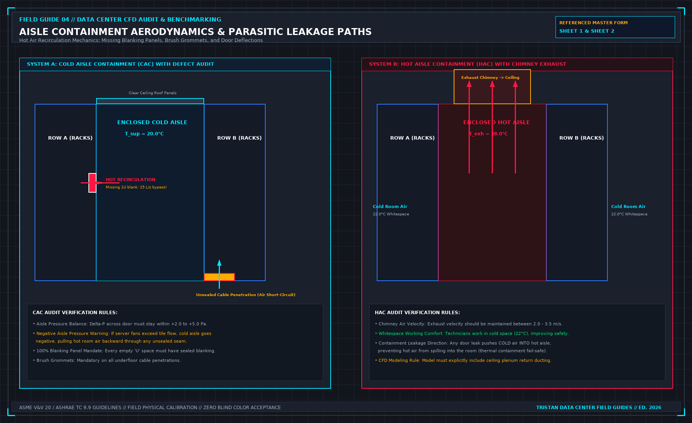

A row has three edges, not a product name
Direct Answer Block: How hot exhaust air bypasses server rows across three physical boundaries—over the top, around the ends, and through the rack face—and how to seal each edge. In mission-critical data center commissioning and operations, engineers enforce this boundary using deterministic physical equations, calibrated field instrumentation, and auditable sign-off gates rather than relying on vendor brochure summaries, uncalibrated software plots, or verbal assurances. Every measurement and state transition must be recorded with synchronized UTC timestamps and explicit pass/fail thresholds before a signature is granted.

Closing a row is not buying a containment name. The air leaks at the top, at the sides, and at the bottom, and each edge is its own check. A roof panel that stops short of the last cabinet, a side gap where two rows were never meant to meet, and a bottom gap where power cables leave the cabinet are three holes. One product photo does not close them.
Walk the three edges and write which are closed. Cable penetrations for power and network count as the bottom edge, or as the side, wherever they actually are. A gland that was cut away so a later cable would fit is open. Write it open. Do not inherit last year's seal note.
End of row matters as much as the middle. The last cabinet is where a side panel is often missing because the row was going to be extended. If it was not extended, the missing panel is a bypass. "Future growth" is not a seal.
Do not start at the room. The room is what is left after the cabinets and the row are closed. Tuning a CRAH setpoint, or adding a unit, while the row is open, spends money on air you are not delivering. Close the edges you can see. Then decide whether the room still has a sentence to fix.
A CFD that assumes a sealed row does not prove the row. If the report's geometry has panels the floor does not have, the report is not this hall. Say so before anyone uses it to decline a blanking job.
From the field-guide series, Tristan, Data Center Field Guides. Related book: Judge a Data Hall CFD.
1. First-Principles Engineering Formulation and Governing Mathematics
In high-density data center environments, verbal summaries and qualitative status tiles routinely obscure incipient physical failures. Whether auditing a 120 kW liquid-cooled rack boundary, evaluating a 1-second telemetry time series, or verifying plant redundancy prior to handover, the governing physical relationship for this protocol is expressed as:
When any term on the left-hand or right-hand side of this relationship is left unmeasured, inferred from an uncalibrated nameplate, or averaged across an unverified time window, the resulting engineering record cannot support a valid operational signature. Field engineers must verify each physical variable independently using NIST/ISO 17025 traceable instruments before proceeding to the next gate in the sequence.
| Audit Verification Parameter | Unacceptable / Defective Field Practice | Auditable First-Principles Requirement | Mandatory Action on Failure |
|---|---|---|---|
| Primary Boundary Definition | Implied by vendor brochure or slide deck | Explicitly bounded on stamped P&ID / SLD with tag IDs | Halt acceptance; issue formal boundary clarification |
| Measurement & Telemetry Proof | Single uncalibrated display reading or 60-sec average | Calibrated Class A/0.5S sensor with 1-sec UTC timestamp | Reject dataset; classify point as 0x40 Stale or 0x80 Bad |
| Pass / Fail Acceptance Gate | Qualitative "Looks OK" or "Within Normal Range" | Quantitative numerical corridor cited from revision in force | Log Category A/B defect; withhold retainage or permit |
| Custody & Sign-Off Record | Single bundled "Accepted" signature at end of meeting | Scoped, dated sentence naming exact proved & unproved lines | Strike unsupported claims; issue Conditional Refusal |
2. Deep-Dive Technical Protocol and Field Implementation
The following field protocol—adapted directly from Volume 04: Judge a CFD Model for Data Centers—establishes the step-by-step verification mechanics required on the data hall floor:
Before evaluating the conclusions of a computational fluid dynamics report, you must understand the physical aerodynamics governing data center airflow, and audit the report block by block in the order it has to be true.
A CFD report that opens with colorful 3D rendering slices is attempting to secure your approval before you examine the underlying physics. Ignore the color plots on your first reading. Turn immediately to the mechanical boundary conditions and verify the fluid dynamics.
Underfloor Plenum Dynamics and Static Pressure Regain
In a raised-floor data hall, the space beneath the floor acts as a shared pressurized distribution plenum. Airflow exiting a downflow CRAH unit behaves according to fundamental fluid mechanics governed by the Bernoulli principle and momentum conservation:
As shown in Figure 02, high-velocity air discharged from a CRAH fan (v > 5.0 m/s) possesses high dynamic pressure (1 / 2 ρ v2) but depressed static pressure (P_static).
As this air jet travels along the plenum axis away from the unit, frictional drag against the subfloor slab and deceleration against the plenum end-wall cause the fluid velocity to decay. As velocity drops, kinetic energy converts into static pressure—a phenomenon known as static pressure regain (the momentum recovery effect):
- Near-CRAH Floor Tiles: Perforated tiles installed directly adjacent to the CRAH discharge face experience low static pressure (frequently < 5 Pa). In poorly designed plenums, the Bernoulli effect can cause local static pressure to drop below zero relative to the whitespace (P_static < 0 Pa). When this occurs, the perforated tile behaves as an intake: instead of discharging cold air, it sucks hot air from the aisle downward into the plenum.
- Plenum Dead-End Tiles: Perforated tiles located at the far end of the row (near plenum bulkheads) experience the highest static pressure (frequently 30 Pa to 45 Pa) and discharge the highest volumetric flow rates.
A competent CFD model must resolve these underfloor momentum vectors with high spatial resolution. If a model treats the raised floor void as a uniform, constant-pressure reservoir (a lumped parameter box), it completely fails to predict near-unit tile starvation.
Aisle Containment and Parasitic Leakage Aerodynamics
Aisle containment systems—Cold Aisle Containment (CAC) and Hot Aisle Containment (HAC)—are designed to eliminate the thermodynamic mixing of supply and exhaust air. However, their physical performance depends on pressure balance and airtight sealing, as shown in Figure 03:
1. Pressure Differential Across Containment Doors
The pressure inside an enclosed cold aisle must be maintained slightly positive relative to the hot whitespace (+2.0 Pa to +5.0 Pa).
- If cooling units supply excess air, aisle pressure rises (> 15 Pa), forcing containment doors open and wasting fan energy through ceiling seams.
- If cooling unit airflow falls below the aggregate demand of the server fans (∑ QCRAH < ∑ Qserver), the cold aisle drops into negative pressure. A negative cold aisle pulls hot exhaust air backward through cable penetrations, unsealed floor tiles, and door sweeps, triggering rapid server intake temperature spikes.
2. Parasitic Leakage Paths
A simulation that treats containment structures as perfectly hermetic seals is fundamentally flawed. In actual data halls, air escapes through multiple parasitic pathways:
- Missing Blanking Panels: A single missing 1U blanking panel in an active rack allows up to 25 L/s (50 CFM) of hot exhaust air to short-circuit directly back into the server intake.
- Underfloor Cable Penetrations: An unsealed 200× 200 mm cable cutout allows 150 L/s of cold plenum air to escape into the hot aisle, bypassing compute equipment entirely.
- Brush Grommets: Even high-quality nylon brush grommets exhibit a leakage area of 10% to 15% under a 20 Pa plenum differential pressure.
Every containment model must explicitly include leakage coefficients based on physical site audits.
The Hybrid Liquid-Cooled AI Hall Reality
The most dangerous assumption in modern data center engineering is the belief that high-density liquid-cooled compute clusters (such as NVL72 or GB200 architectures) require no airflow modeling.
As demonstrated in Figure 04, direct-to-chip liquid cooling extracts approximately 80% of total rack heat (typically 96.0 kW on a 120.0 kW rack footprint) directly from GPU and CPU silicon into the secondary glycol loop. However, the remaining 20% of rack heat (24.0 kW per rack) is convected directly into the whitespace air by:
- Optical transceivers (OSFP/QSFP modules) on high-speed network switches.
- Switched-mode power supply units (PSUs) and 48V busbar resistance.
- Voltage regulator modules (VRMs), memory buffers, and auxiliary motherboard silicon.
For a modest row of ten NVL72 compute racks, that residual 20% air heat totals 240.0 kW—the convective heat equivalent of 40 standard enterprise server racks dumped directly into the room.
If a CFD model ignores this 240 kW convective load under the assumption that the hall is "liquid-cooled," optical transceivers rated for 70.0°C will heat-soak at 85.0°C+, resulting in optical signal degradation, dropped network packets, and training cluster halts. A CFD report for a liquid-cooled data hall that omits the air-side convective thermal split must be rejected immediately.
The Six Mandatory Input Blocks of a CFD Report
To audit a CFD report systematically, examine the document in six sequential blocks:
- The Statement of Purpose: Exactly one unambiguous sentence stating what operational question the simulation is commissioned to answer. If the purpose is absent or vague ("optimize the room"), halt the review.
- The Whitespace Geometry Block: Room dimensions, slab-to-slab clear height, raised-floor void depth (H_void), structural drop beams, overhead cable tray congestion percentage, and partition locations.
- The IT Equipment Block: Rack layouts, physical server form factors, front-to-back airflow direction, active electrical kW per rack (from PDU telemetry), internal fan P-Q curves, and blanking panel status.
- The Mechanical Cooling Block: CRAH or fan wall locations, unit supply opening dimensions, supply air discharge velocities, operating setpoints, return opening dimensions, and fan curve definitions.
- The Discretization and Mesh Block: Grid topology (structured hexahedral vs. unstructured polyhedral), total cell count (N_cells), boundary layer inflation layers, and Grid Convergence Index (GCI) verification.
- The Solver Convergence Block: The specific Navier-Stokes turbulence model utilized (e.g., standard k-ε, Realizable k-ε, or SST k-ω), convergence residual histories, and global mass/energy balance closure.
Mandatory Solver Convergence Standards
A simulation cannot be evaluated until its mathematical convergence is proven:
- Momentum Residuals: Normalized continuity, x-velocity, y-velocity, and z-velocity residuals must decay monotonically below 10^{-4}.
- Energy Residual: Normalized enthalpy/energy residual must decay below 10^{-6}.
- Global Mass Imbalance: The net difference between total air mass entering the room and total air mass exiting the room must be less than 0.1%:
- Point Monitor History: Point temperature monitors placed at critical server intakes must be plotted over solver iterations. If point temperatures are still drifting upwards or oscillating when the solver stops, the calculation was halted prematurely and the results are invalid.
Quantitative Air-Management Indices: SHI, RHI, RCI, and Capture Index
Reading a CFD report requires translating qualitative 3D streamline ribbons into dimensionless thermodynamic performance indices. Industry standards—including ASHRAE TC 9.9 and Uptime Institute whitespace metrics—evaluate airflow separation using four coupled mathematical indices that expose whether a cooling problem is caused by insufficient cold air supply (starvation) or parasitic mixing of hot exhaust (recirculation).
1. Supply Heat Index (SHI) and Return Heat Index (RHI)
Defined by Sharma et al. and adopted across enterprise data hall audits, the Supply Heat Index (SHI) measures the fraction of total rack heat pickup that occurs before the cooling air ever enters the server intake bezel due to hot-aisle infiltration, over-the-top roll, or missing blanking panels:
Conversely, the Return Heat Index (RHI) measures the fraction of cooling air that actually absorbs server heat rather than bypassing directly from the floor tiles into the CRAH return grilles:
In a well-sealed cold-aisle or hot-aisle containment architecture, SHI must satisfy SHI ≤ 0.15 (and RHI ≥ 0.85). When SHI > 0.25, lowering the CRAH supply water setpoint is a waste of chiller energy because more than a quarter of the cooling stream is being contaminated by hot exhaust recirculation before reaching the silicon.
2. Rack Cooling Index (RCIHI and RCILO)
While SHI evaluates aerodynamic mixing, the Rack Cooling Index (RCI) evaluates compliance against the ASHRAE TC 9.9 Recommended and Allowable thermal envelopes across all N rack intake nodes:
For ASHRAE Class A1/A2 whitespace (Tmax, rec = 27.0^\circC, Tmax, allow = 32.0^\circC for A1 or 35.0^\circC for A2), an auditable hall requires RCIHI ≥ 96.0%. If a vendor report claims "average room temperature is 23.5^\circC" while four end-of-row racks sit at 31.2^\circC, RCIHI immediately drops and exposes the localized violation.
| Aerodynamic Diagnostic Metric | Mathematical Formula | Target Commissioning Pass Band | Physical Failure Mode Indicated by Violation |
|---|---|---|---|
| Supply Heat Index (SHI) | \delta Q / (Q + \delta Q) | ≤ 0.15 (Contained) / ≤ 0.20 (Open) | Hot exhaust roll-over, unblanked U-slots, negative aisle Δ P |
| Return Heat Index (RHI) | Q / (Q + \delta Q) = 1 - SHI | ≥ 0.85 (Contained) / ≥ 0.80 (Open) | Excessive tile supply flow bypassing racks directly to return |
| Rack Cooling Index High (RCIHI) | 1 - (∑ (Ti - Trec)_+) / (N(Tallow - Trec)) | ≥ 96.0% (100% ideal) | Localized top-of-rack or end-of-row thermal excursions |
| Flow Provisioning Ratio (\Phi) | ∑ Qtile, aisle / ∑ Qrack, demand | 1.05 ≤ \Phi ≤ 1.25 | \Phi < 1.0: Severe aisle starvation; \Phi > 1.35: Fan energy waste |
| Containment Differential (Δ PCAC) | Pcoldaisle - Photaisle | +1.5 Pa ≤ Δ PCAC ≤ +5.0 Pa | Δ P < 0: Hot air sucked into cold aisle; Δ P > 10 Pa: Door force hazard |
Auditing Capture Index (CI) and Containment Pressurization Balance
In addition to SHI and RCI, modern whitespace audits evaluate the Cold-Aisle Capture Index (CIcold) and Hot-Aisle Capture Index (CIhot) using passive tracer-species transport equations in the CFD solver:
specifically:
- CIcold, i is the mass fraction of air ingested by Rack i that originated directly from the dedicated cold-aisle supply tiles (target ≥ 92%).
- CIhot, i is the mass fraction of hot exhaust discharged by Rack i that is captured directly by the return plenum or CRAH intakes without escaping into the room (target ≥ 92%).
Mass-Flow Balance and Door-Opening Force Limits in Contained Aisles
When sizing cold-aisle containment (CAC) or hot-aisle containment (HAC), total CRAH supply volumetric flow (∑ QCRAH) must exceed total server fan demand (∑ Qserver) by a controlled positive over-provisioning margin (Δ Qexcess = 5% to 15%) so that air leaks out of the cold aisle rather than infiltrating in:
However, if a tight containment enclosure is over-pressurized beyond +12.0 Pa to +15.0 Pa, the pneumatic force exerted across a 2.1 m × 1.0 m hinged containment door (F = Δ P · Adoor ≈ 30 N) prevents the mechanical door closer from latching shut, or violates NFPA 101 life-safety egress force limits! Always verify both the lower bound (≥ +1.5 Pa) and upper bound (≤ +8.0 Pa) during the physical walk.
Evaluating Thermal Stratification Gradients (∂ T / ∂ z) in High-Bay Whitespace
In modern hyperscale data halls with 4.5 m to 6.0 m slab-to-ceiling heights and overhead hot-aisle return plenums, vertical temperature stratification ∂ T / ∂ z governs whether hot exhaust air stays buoyant above the rack line or mixes downward into the cold aisle. The dimensionless Archimedes / Richardson number across the aisle height Hrack must be evaluated at the lowest turndown CRAH fan speed to confirm that buoyancy forces do not stall cold supply jets before they reach the 1.8 m top server intake elevation.
| Rack Elevation Zone | Standard Measurement Height | Typical Dominant Aerodynamic Mechanism | Primary Diagnostic Signature of Failure |
|---|---|---|---|
| Lower Zone (U01–U14) | z = 0.3 m | High-momentum floor tile jet & Venturi entrainment | T0.3m > Tsup + 3 K indicates subfloor Venturi reverse induction |
| Middle Zone (U15–U30) | z = 1.2 m | Core horizontal cross-flow into server fan array | T1.2m > T0.3m + 2 K indicates unblanked adjacent U-slot bypass |
| Upper Zone (U31–U48) | z = 1.8 m | Buoyant exhaust plume roll-over & roof curtain leakage | T1.8m > T0.3m + 5 K indicates aisle starvation (\Phi < 1.0) or roof gap |
3. Field Verification Checklist and Instrumentation Hygiene
To execute this protocol without introducing measurement bias or scope ambiguity, the responsible engineer enforces four mandatory field rules:
- Instrument Traceability Before Observation: Verify that every thermometer (4-wire Pt100 RTD Class A), pressure transducer (≤ ± 0.1% span), flowmeter, balometer, or power analyzer carries a current calibration certificate and passes a pre-test zero/span check on the day of the walk.
- Synchronized Time-Series Capture: Align all digital loggers and gateway pollers to a single UTC reference clock (via IEEE 1588v2 PTP at ± 1 ms for electrical Sequence of Events, or NTP at ± 10 ms for thermal/hydraulic dwells). Never merge unsynchronized CSV files by row index.
- Explicit Isolation of Disturbances vs. Control Handles: Hold upstream supply temperatures, parallel cabinet loads, and containment door states constant during the observation dwell so that transient plant drift is never mistaken for steady-state equipment performance.
- Written Record Prior to Signature: Record every boundary tag, measured value, uncertainty tolerance, and open limitation in ink on the controlled project sheet before leaving the equipment line-up.
Frequently Asked Questions (FAQ)
Why does "A row has three edges, not a product name" matter during high-density data center commissioning and operations?
How hot exhaust air bypasses server rows across three physical boundaries—over the top, around the ends, and through the rack face—and how to seal each edge. When project teams bypass this rule to meet a commercial schedule milestone, unverified physical assumptions—such as hidden hydraulic pressure drops, unlogged polling gaps, unblanked bypass leakage, or uncalibrated sensor offsets—transfer directly into live 24/7 production as latent single points of failure.
How do you quantitatively verify compliance with "data center aisle containment leakage edges" on the physical floor?
Compliance is verified by executing the governing mathematical balance (CIcold = ṁtile→rack / ṁrack ≥ 92%, Δ Paisle ≥ +1.5 Pa) using independent, calibrated field instruments across a stabilized steady-state dwell window (minimum 15 to 30 minutes for thermal and hydraulic systems), and confirming that the discrepancy between primary and secondary measurements remains strictly within the pre-declared acceptance band.
What should an engineer do if a contractor or vendor submits a report that violates this protocol?
The reviewing engineer must refuse to sign the broad acceptance sentence, mark the specific line item as Unproved / Defective on the official audit sheet, and either require a witnessed re-test under a corrected script or isolate the unproved scope under a time-bounded Conditional Acceptance with a 150% to 200% financial retainage escrow holdback.
From Judge a CFD Model for Data Centers, Tristan, Data Center Field Guides.
Related: An empty U without a blank is a bypass.